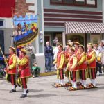
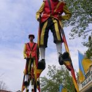
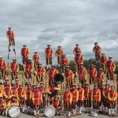

The Royal Stilt Walkers of Merchtem conquer the world
Some customs and traditions persist in the leisure life of certain regions. This creates folklore, which allows future generations to connect with the past in an engaging way. Stilt walking once arose out of pure necessity, but today it's a fun form of entertainment. Not only in Europe, but also in places like China, Japan, and Polynesia, stilt walking has been part of the popular culture. In America, the sandwich man is a well-known figure. All these forms of stilt walking have their own unique histories.
We must also go back in time to understand the meaning of stilt walking in Brabant. Within this centuries-old tradition, the now world-renowned folkloric association “The Stilt Walkers of Merchtem” was born — a group that has built international fame and a solid reputation over the years.
In the past, people used stilts to cross rivers or stay dry during floods. Stilts were likely used worldwide until more modern tools replaced them. One historical example is the stilt walkers of Namur along the Meuse River. Since the 18th century, stilt walkers have been reported in the marshes of Landes in southern France. Stilts were also used for tasks difficult to reach at regular height — like plasterers in construction or hop farmers in Kent, England. Shepherds in several countries used stilts to oversee their flocks better.
Stilt walking as a profession faded with modern tools, but it remained popular as a children’s game and folk sport. In folklore and circus traditions, the stilt walker appears in parades and performances. The human desire to be "taller than the rest" — to feel like a giant — expresses itself in this art form. From American sandwich men to Bantu tribe sorcerers and the giants in Flemish cavalcades… the phenomenon is global.
Stilt walking in Merchtem and Brabant through the centuries
In Brabant, stilt walking also has a very old tradition. Archive documents show that it was already known in our region in the year 1336. In the early 16th century, the miniaturist Simon Bening (°1483/84) illustrated four stilt walkers in a miniature painting showing a stilt duel. This artwork, part of the Book of Hours of Philip the Handsome (1505), is preserved in Valencia. Flemish painter Pieter Bruegel the Elder depicted two stilt walkers in his famous painting “Children’s Games” (1560), which portrays 81 different folk games. Our stilt walkers still wear clothing from that era — now adapted to the Belgian tricolor.
The Molenbeek, a broad but shallow stream flowing north through Merchtem and eventually into the Willebroek Canal at Ruisbroek, also runs through Langevelde, a hamlet of Merchtem. This stream often overflowed, isolating Langevelde from the village center. Residents turned to stilts to cross the swampy areas. In heavy frost or snow, they used ski-like sliding boards to glide across frozen ground, and wore block shoes — hence the “block walkers” within the Royal Stilt Walkers today.



The foundation of the Stilt Walkers of Merchtem
During World War II, options for relaxation in occupied Belgium were limited. People began organizing local entertainment again, returning to traditional games. The youth of Langevelde started walking on stilts, and adults soon followed in 1942. They made stilts from ash and willow wood, ranging from one to three meters in height. A healthy rivalry emerged to walk higher and higher. The stilt walkers of Langevelde also began holding mock battles — purely for sport.
On June 10, 1945, a Liberation Parade marched through Merchtem. Every neighborhood participated. Instead of building a float like others, the people of Langevelde sent out 25 stilt walkers — elegantly dressed and from five families: Van Hoeymissen, Van Den Broek, Cooremans, Walravens, and Meysman. The surprise among spectators was immense, and the stilt walkers were a huge hit.
Just days after the parade, the Folkloric Association “Stilt Walkers of Merchtem” was founded. The driving force and first president, Jan Vanderhasselt (°Merchtem, 11/09/1907 – †Ekeren, 01/06/1979), his first wife Jeannette Van Der Slagmolen (°Asse, 28/11/1911 – †Merchtem, 07/11/1968), and Florent, Jules and Victorine Van Hoeymissen built up the group together.
After their successful appearance in the Merchtem parade, the group received an invitation just two weeks later to perform in a Peace Parade in Wemmel. In February 1946, they also joined the carnival parade in Aalst, where the Merchtem stilt walkers were honored as winners. The future was secured, and the invitations kept pouring in.